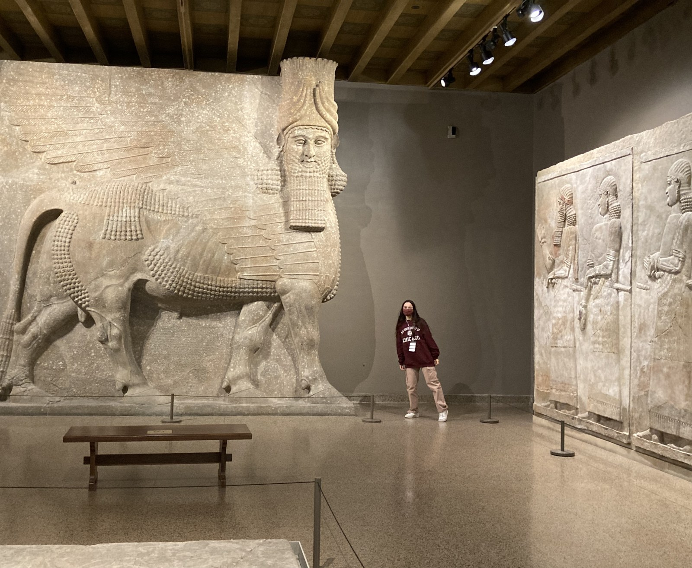
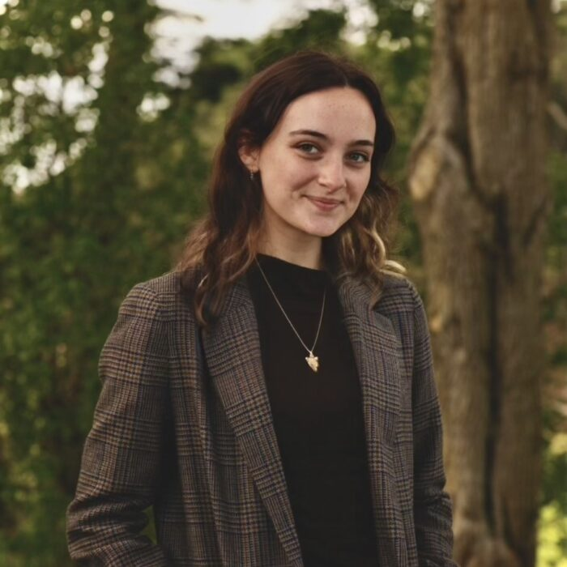

Hello, I’m Bryce :)
I am a SF native who fell in love with language through five years of exposure to a non-Indo-European language (Modern Standard Arabic) in middle school, much reading of high fantasies with their own made up languages (or "conlangs") in junior high, and multiple in depth independent studies into linguistics throughout high school. As I grow my coding skills, I become more and more interested in creating technology for low-resource languages, like ancient ones.
At the University of Chicago I study linguistics with minors in computational linguistics, data science and Middle Eastern studies. Most of my time goes to Akkadian: reading and photographing ancient mesopotamian tablets at the ISAC, and training ML models to complete various cuneiform-related tasks at the Digital Pasts Lab and through my Emergent Ventures project. Ancient languages create problems of data imbalance, scarcity and messiness/fragmentation, but that’s where you find out whether a model really learned anything, and how much its capable of doing applied to other problems.
Outside of staring at wedges, I love reading, drawing, dancing, watching Ghibli movies, travelling (and consequently trying to pick up new languages), and drinking copious amounts of tea (current favorite: vanilla chai rooibos).

Reach out!

I’d love to hear about research, internship opportunities, or anything to do with language, machine learning, or a combination of the two:
bhoenigman@uchicago.edu